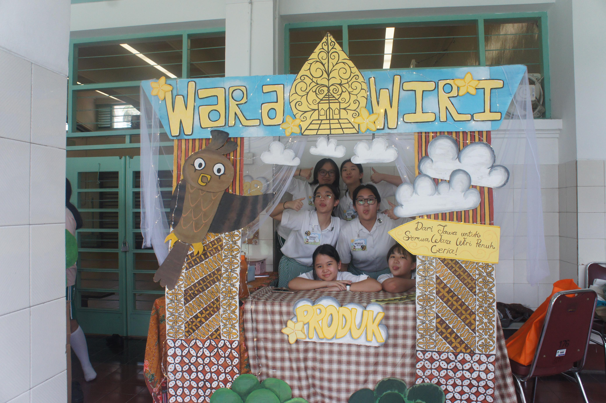

Kesimpulan
Integrated Learning (IL) merupakan program belajar berbasis proyek yang menggabungkan beberapa mata pelajaran. Pada kali ini, proyek IL bagi kelas 9 adalah Bazar dan Pensi, yang mencakup semua mata pelajaran utama yang ada di SMP Santa Ursula Jakarta, yakni IPS, PPKn, Bahasa Indonesia, Bahasa Inggris, Matematika, IPA, Kesenian, Penjas, TIK, dan juga Agama. Setelah melalui proyek IL ini, kami belajar banyak sekali hal. Mulai dari cara berwirausaha hingga cara menjalani kerjasama yang kompak. Kami juga belajar bagaimana cara melakukan promosi yang efektif, cara membuat produk-produk tertentu, cara menentukan harga jual dan menjalani sebuah bazaar, dan tentunya wawasan kami juga dibuka di aspek lainnya.
Proyek ini tidak hanya sebagai penilaian, namun banyak sekali tujuan dan manfaat lainnya. Pengerjaan proyek ini mencakup banyak sekali tahap, dimulai dari semua perencanaan, pelaksanaan, hingga laporan. Proyek ini telah melatih kami dalam berbagai hal, yaitu kemampuan bekerjasama, berkomunikasi, menghadapi kepribadian anggota kelompok, membuat perencanaan dan laporan, mengasah kreativitas, menyelesaikan masalah, berbisnis, mengelola uang, meningkatkan daya juang dan lainnya. Tanpa disadari, proyek ini pastinya akan bermanfaat bagi kami semua. Manfaat yang kami peroleh ini merupakan bekal yang sangat penting di masa depan.
